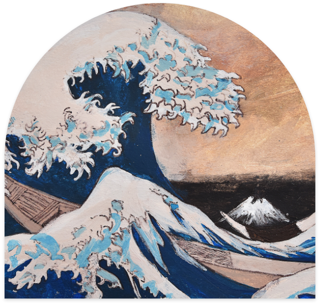

Some Painting
creations i made during my free time
these illustrations, painted in recent years, have allowed me to develop and express my passion for graphic design. i used acrylic paint for all of them.
- 
The Great Wave off Kanagawa

The Girl and The Moon

Spirit Ghost